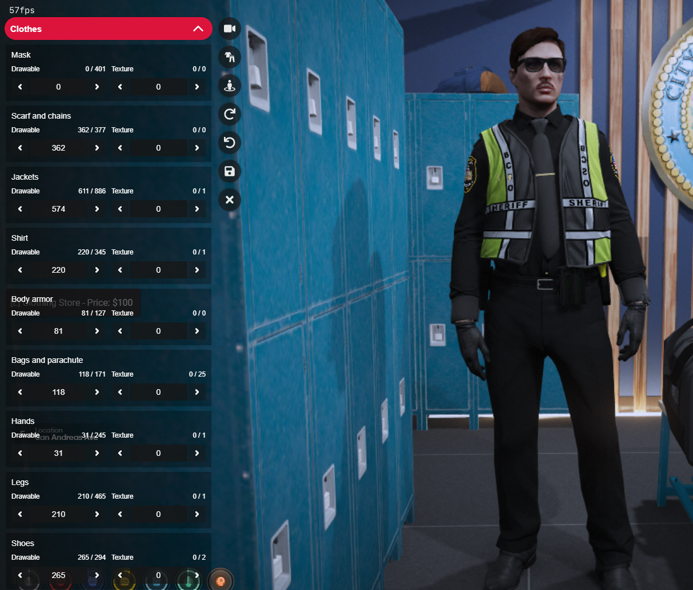

FTO Guide & SOP
Field Training Officer Division
Uncensored RP | Head of FTO Division: Joe Davis
Introduction & Mission
Welcome to the Field Training Officer Division SOP & Training Guide. This document outlines the standards, procedures, and expectations for FTOs and cadets. Our mission is to ensure every cadet is prepared for solo patrol and upholds the highest standards of professionalism and safety.
FTO Program & Sergeant Policy
All deputies promoted to Sergeant will complete Field Training Officer (FTO) certification. This policy ensures every Sergeant is equipped to mentor, train, and evaluate cadets, maintaining the highest standards of professionalism and leadership within the department.
FTO Rules & Requirements
- Minimum rank for FTO is Sergeant and up. All Sergeants are FTOs and must complete FTO training.
- FTOs must prioritize cadet training above other duties. If a cadet needs training, FTOs will drop other tasks or rides to focus on the cadet.
- All FTOs must participate in routine FTO trainings and stay updated on SOP changes.
- Training must be professional, unbiased, and follow department SOP and city rules.
- Cadets must be in full uniform and vest during all all times unless instructed. .
- All training scenarios must follow department policy.
- Training should be 3 days minimum. However you are permitted to complete phase 1 and 2 in 1 day as phase 1 is mostly onboarding.
Cadet Handover Procedure
The following will be the first steps you take when you are paired with a Cadet.
- Confirm Callsign
"Do you have an assigned callsign? If not. open your MDT by thinking /MDT. click MDT, Dashboard and select your name in the bottom left cornor. from there select change callsign and do the same on your handheld radio by opening it, pressing the gear icon and editing your name and callsign/" - Set Unavailable
FTO sets MDT status to 10-7 (unavailable).
This is to ensure you have full focus on providing all info to the cadet and no steps are missing for onboarding. the guide will inform when you may go back 10-8 and proceed to patrol'" - Follow Training Guide
Please ensure to use this training guide as accurate as possible to ensure no missed steps. we should not move a cadet onto the next phase unless you as an FTO feel 100% positive that they understand everything in that phase - Open FTO Report
At the end of the shift "or" completed phase you MUST open your MDT open a FTO report with the required information and grade the phase appropriatly "Open a new FTO report in the MDT. Log: 'Training Start — Cadet [Name], FTO [Name], Date/Time.' This report will track all training progress and feedback."FTO Report Grading Policy:
You must input and grade 100% honest, unbiased opinions of the cadet's scores. For phases 1-4, you will grade cadets on the following topics:- Professionalism
- SOP Knowledge
- Communication
- Driving
- Level of Force
- Decision Making
- Report Writing
Failure to maintain and meet these requirements will result in corrective action, such as repeating the FTO course and report writing training, and may be elevated to high command's attention.
Phase 1: Onboarding (Start)
This phase covers the initial building tour, uniform setup, and equipment issue for new cadets.
- Building Walkthrough
Have the cadet walk through the following areas in order:
-
Garage
-
Required Duty Equipment List
Equipment Type Qty PD Pistol 1 PD 9mm Ammo (Boxes) 5-10 Taser 1 PD Rifle or PD PDW 1 Flashlight 1 Nightstick 1 Handcuffs 5 Radio 1 Body Armor 5 Body Camera 1 - Radio Setup
Locker Room
Explain to the cadet how to activate their radio using /radio, by pressing the assigned key (+), or by using the radio from their pockets. Instruct the cadet to go to channel 1 for PD, channel 2 for EMS, and channels 3-10 for extra use. Make sure the cadet sets their radio to channel 1 before going 10-8. Teach the cadet to use proper 10 codes and to announce their callsign as "10-8, 10-41" when starting their shift.- Uniform Setup & Guidelines
Have the cadet access the clothing locker and set up their uniform. Gloves and hats are optional, but hats must be BCSO issued.
These uniform guidelines are important for all ranks and future reference. Make sure the cadet understands them and asks questions if unsure.Uniform Guidelines:
The BCSO has a set uniform guideline for each rank. Additional guidelines apply for subdivisions. During Spring, Fall, or Winter, Rain, Cold, or Snow uniforms are permitted.
Hair color must be natural. Professional hair styles only.
Facial hair must be groomed. Beards and mustaches are allowed.
Majors and below must wear regular patrol uniform unless in an approved subdivision. Chiefs 101-104 may wear plain clothes or suits.
Subdivision uniforms must be approved by chiefs.
Body Cam Policy:
All deputies must wear and activate their body camera while on duty, during all law enforcement interactions, traffic stops, arrests, and any situation involving use of force. Footage must be retained and made available for review upon request by command staff or FTOs. Failure to comply may result in disciplinary action.- Radio Setup:
Evidence Room
Explain to the cadet how to activate their radio using /radio, by pressing the assigned key (+), or by using the radio from their pockets. Instruct the cadet to go to channel 1 for PD, channel 2 for EMS, and channels 3-10 for extra use. Make sure the cadet sets their radio to channel 1 before going 10-8. Teach the cadet to use proper 10 codes and to announce their callsign as "10-8, 10-41" when starting their shift.Tell the cadet to log and store all seized items here, following chain of custody rules.- Evidence Report Number
Shooting Range & Firearm Certification
Inform the cadet that a report number will be displayed once a report is made. When logging evidence, always use a 100 prefix before the report number (e.g., if the report is 25, input 10025 for evidence labeling).Have the cadet complete a quick firearm certification. Tell the cadet to announce "Range is hot" before using the range, only use firearms when life is in danger, aim center mass, and fire only until the threat is disabled. For the taser, tell the cadet to give three verbal warnings before deploying and never spam taze. Have the cadet practice safely loading, aiming, and firing the service pistol and taser under supervision.Self-Defense Training:
FTO: "While at the shooting range, let's discuss self-defense. You may only use force in self-defense or to protect others from imminent harm. Justified reasons include stopping an active threat, preventing injury, or defending yourself or another from assault. Always use the minimum force necessary and follow the Use of Force Continuum. Practice responding to simulated threats and explain your reasoning for each action taken."- Range Safety
Front Desk
Before using the range, have the cadet announce "Range is hot." Firearms are only used when life is in danger. Instruct the cadet to aim center mass and fire only until the threat is disabled. For the taser, have the cadet give three verbal warnings before deploying and never spam taze. Practice safely loading, aiming, and firing the service pistol and taser under supervision.Have the cadet identify where civilians and lawyers are greeted and where vehicle release or license requests are handled.Briefing Room/OfficesTell the cadet where meetings and roll calls are held and that attendance is mandatory while on duty.- Weapons License
FTO: "We will now issue you a weapons license through the MDT. This is also the same process you will use to issue or remove any license in the city." Steps: Open MDT with /MDT, go to Citizens tab, search for your name, select License → Weapons License, add notes with cadet name, badge number, and date issued.- Garage & Patrol Prep
FTO: "Before patrol, confirm uniform and vest are on, equipment is signed out, radio is on, MDT is logged in, and weapons license is issued. You will now ride with me on patrols where I will demonstrate procedures and expectations."- Helpful Commands & Keybinds
Useful Keybinds & Commands
- /MDT — Open Mobile Data Terminal
- /IV — Impound Vehicle
- /radio — Open radio
- /jail [id] [time] — Jail suspect
- /photo — Take mugshot photo
- Q — Toggle emergency lights
- Down Arrow — Activate siren
Radio Procedure: Going On/Off Duty
- Going On Duty: Instruct the cadet to ensure they are properly clocked in before starting patrol. They must radio: 'Bravo [callsign] 10-8, 10-41' to indicate they are available and starting their shift. Emphasize that this must be done correctly the first time to maintain accurate duty records.
- Radio Setup – Going Off Duty: Inform the cadet that at the end of their shift, they must radio: 'Bravo [callsign] 10-7, 10-42', indicating they are going off duty and ending their shift.
- Radio Etiquette: Inform the cadet that they do not need to memorize every radio code perfectly. If they are unsure of a code or what to say, take a moment to think, and ensure they can get their point across clearly in 2–3 seconds. Always include their location and relevant details. For example, if the cadet does not remember that a 10-70 is a foot pursuit, they can simply say: 'Foot pursuit in progress, Inbound on Innocence Blvd, white male, red shorts, white tank top'.
Phase End: When onboarding is complete, FTOs must finalize the FTO report in MDT. Only high command can approve the report. Once approved, the cadet is eligible to begin Phase 2 training.
Phase 2: 5 Levels of Force, MDT & Booking
- Cadet Observation & Callouts
During Phase 2, cadets should begin doing callouts and participate in their second shift. Cadets should not drive until Phase 3. Phase 2 is focused on learning procedures, callouts, and basic field operations under close FTO supervision.- Probable Cause vs. Reasonable Suspicion
Reasonable Suspicion: Specific, articulable facts that suggest a person may be involved in criminal activity. This allows officers to briefly stop, question, or frisk someone for weapons.
Example: An officer sees someone pacing nervously outside a closed store late at night, looking into windows. The officer may stop and question the person based on reasonable suspicion.
Probable Cause: A reasonable basis, supported by facts and evidence, for believing a crime has been, is being, or will be committed. Probable cause is required for arrests, search warrants, and full searches.
Example: An officer smells marijuana, sees drug paraphernalia in plain view, and finds a large amount of cash during a traffic stop. These facts together provide probable cause to search the vehicle and arrest the suspect.
Key Difference: Reasonable suspicion allows for temporary detention and investigation; probable cause is needed for arrests and full searches. Always document your facts and reasoning in the MDT.- Maximum Jail Time
The maximum jail sentence is 3 hours (180 months). Never exceed this limit for any suspect.- Miranda Rights Script
Officers must read the full Miranda warning any time a suspect is detained or arrested—not just before interrogation. In general, we will double-check at the station that the suspect is aware of their rights and understands them.
“You have the right to remain silent”
“Anything you say can, and will be used against you in a court of law”
“You have the right to an attorney, if you cannot afford one, one will be appointed to you by the State of San Andreas, if available”
“Do you understand these rights as I have just read them?”
If the suspect does not understand, repeat or clarify. Document in your report that rights were read and acknowledged at the scene and again at the station.- Hostage Handling After Release
Immediately separate hostages from suspects. Get each hostage’s name for the report. Search hostages for weapons, drugs, or stolen items that may have been planted. Ask hostages what happened and document their statements. Provide medical attention if needed. Record all findings and actions in MDT.- Booking and Report Writing
Follow BCSO SOP: Process the suspect, enter charges, collect evidence, and write a detailed report including all facts, evidence, and witness statements. Reports must be complete, detailed, and accurate. Always link evidence and witness statements to the MDT report.- 5 Levels of Force
All officers must follow the 5 levels of force:- Officer Presence — Uniformed officer or marked vehicle presence
- Verbal Commands — Clear, understandable directions
- Empty Hand Techniques — Soft/hard physical control (e.g., restraining, tackling)
- Less Lethal Force — Taser, baton, bean bag rounds (warn 3 times before deploying)
- Lethal Force — Firearms or any weapon likely to cause serious injury or death
- Scene Staffing Limit
All scenes are maxed to 6 BCSO officers unless an officer is downed. Additional units may only join if an officer is injured or downed and requires assistance.
Reference: See SOP Sections 2.6 and 2.7 for more details.
MDT Procedures & Deputy Basics Manual
This manual covers the essential MDT and field procedures every deputy must know for daily operations.Reports & Incidents Tab — Usage & Saving
Reports Tab: Use for documenting events with no suspect in custody (e.g., citations, shots fired with no suspects, property damage).
- Open /MDT and go to the Reports tab.
- Click New Report and fill out all details: event description, involved parties, evidence, witness statements.
- Set the report as Active and assign the appropriate priority.
- Review and Save the report.
- Open /MDT and go to the Incidents tab.
- Click New Incident and enter all details: suspect info, charges, evidence, witness statements.
- Track the suspect, charges, and case status throughout processing.
- Review and Save the incident.
- When creating a new incident, enter a Title in the format: Date — Incident Type — Suspect Name (e.g., "09/29/2025 — Robbery — John Doe").
- Fill in a brief Description of the incident.
- Press Save to create the incident record.
- After saving, you can press Edit to access more detailed options:
- Add or update charges for the suspect.
- Attach evidence, witness statements, and additional notes.
- Update case status and priority as needed.
- Always review all information for accuracy before finalizing the incident.
Booking Procedures
Follow these detailed steps to properly book a suspect after arrest:Search Procedures for Suspects
Any and all personnel brought into the PD garage or secured areas must be searched twice: once while on scene and once in the garage before entering the building. Use third eye (Left Alt + Right Click) to search, or use your F6/F9 muscle for the police menu to search. This is mandatory for officer safety and evidence integrity.- Remove the suspect from the vehicle and pat their pockets down one last time for assurance.
- Ask and confirm the suspect was Mirandized; if unsure, Mirandize them again.
- Walk with or escort the suspect into the processing room and have them line up in front of the height board.
- Remove any masks, hats, glasses, and objects blocking the suspect’s face. Pull out your PD-issued camera and take a booking photo.
- Remove any gloves or objects blocking the suspect’s fingers. Search for identification, ID, or driver’s license and check their MDT profile to see if the image matches. If not, or if they have no ID, proceed to fingerprint.
- Walk the suspect to the fingerprint scanner and scan their fingerprints. If no matches come back, input their first and last name into the system and ensure it is up to date. If not in the system, hold the suspect until you can identify them and contact a supervisor.
- If the suspect is identified and cooperates, move them to a cell, placing them alone (never with another individual). Use /me to remove radio, phone, etc.
- Start a report, add charges, and once charges are read off to the suspect, ask if they plead guilty or not guilty.
- If guilty, charge them through the tablet (not MDT) via billing. Once fines are auto-removed, use /jail id time, then write your report in detail only after sending off the suspect.
- If not guilty, the charge is x3 for the fine and they are released after placing an ankle monitor and informing them they have 24 hours to contact a judge.
- All evidence should be properly stored in the evidence locker, using a prefix of 100 (e.g., MDT report #114, evidence goes in locker 100114). Link the MDT report to the evidence number; all evidence should auto-populate in the report.
Contraband List
- Contracts Tablet
- Gruppe Sechs Tablet
- All Weapons
- All non licensed guns
- Angle grinder
- Spoofing card
- Hack USB
- Thermite
- Large Drill
- Signal Booster
- C4 explosive
- ALL Drugs
- Razor Blades
- Dirty Money
- Body Armor
- Waste Management Maintenance Key
- Lockpicks
- Advance Lockpicks
- ALL EXPLOSIVES
- ALL weed is legal up until 10 baggies
- Growing weed is legal up until 3 plants; anything over that is a drug charge
- Zip ties
- Paper bags
- Bobby pins
- Search any duffle bags before returning to suspect
Tip: Always double-check all documentation and evidence before finalizing the booking. Accuracy is critical for successful prosecution and accountability.- Driving Begins
Cadets may begin driving patrol vehicles in Phase 3. FTOs should actively help and coach cadets as they drive and perform patrol duties.- Speed Limits
City: 60 MPH, Freeway: 100 MPH. Only exceed these limits for Code 2 or Code 3 calls, and always prioritize safety.- Code 5 Rules & Instructions
Code 5 is a coordinated felony stop. Announce “Code 5” on radio and wait for backup. Position vehicles for maximum cover and safety. Use PA or radio to order all occupants out, one at a time, hands visible. Do not approach until all suspects are secured and cleared. Only supervisors may override or change Code 5 procedures.- Pursuit Policy & Orders
Pursuits are only allowed for felonies or serious crimes. Announce pursuit on radio, update location and direction. Terminate if unsafe (high risk to public/officers). Use spike strips only with supervisor approval. After pursuit, complete a detailed MDT report including reason, actions, and outcome.- MDT Usage for Specific Tasks
Use MDT to issue/remove licenses, manage BOLOs, link evidence, and write reports. Always double-check spelling, dates, and details. Attach all relevant evidence and witness statements.- Report Format
Reports must include: Title (Date — Incident Type — Suspect Name), Date/Time of incident, Involved parties (suspects, victims, witnesses), Charges filed, Evidence attached (photos, items, statements), Summary of actions taken and outcome.- Fines and Billing
Fines are processed through the tablet, not MDT. If suspect pleads not guilty, fine is tripled (x3) and they are released with an ankle monitor. Suspect has 24 hours to contact a judge for appeal. Document plea and billing in the report.Phase 3: Driving, Patrol Operations and Vehicles
This phase covers all driving, patrol, and vehicle operations. Note: Cadets do not receive their own patrol vehicle until the end of Phase 4. In Phase 3, the FTO will show the cadet how to use PD vehicles, which vehicles are allowed, and how to fit vehicles at La Mesa. Cadets may drive only approved vehicles under FTO supervision.- Vehicle Eligibility & Setup
FTO: "Cadets must drive the Crown Vic or Taurus patrol units until they are promoted to Deputy. Other vehicles in the PD garage (Tahoe, Raptor, Tacmed, Toyota Camry) are reserved for command. All vehicles must have light bars present except for command vehicles and above. Vehicles must be taken to the shop at La Mesa for proper livery and light bar installation; other shops will not be refunded. Cadets may only drive under FTO supervision and do not receive their own car until the end of Phase 4." - Prowler Radar Setup & Use
FTO: "Before you drive, let's set up your Prowler radar. Press the assigned key (usually F5 or a custom bind) to open the radar interface. You can set your speed threshold by adjusting the speed dial—this will alert you when vehicles exceed the set speed. To activate the radar, press the 'Activate' button. You can toggle between front/rear radar and set the detection range. Practice changing the speed threshold and activating/deactivating the radar until comfortable." - Plate Scanner & BOLO Management
FTO: "Open the plate scanner from the radar interface. To scan a plate, drive behind a vehicle and press the 'Scan' button. The system will display the plate number, owner, and any flags. To set a BOLO (Be On the Lookout), enter the plate number and details in the BOLO tab, then press 'Add BOLO.' To remove a BOLO, select it from the list and press 'Remove.' Practice scanning plates and managing BOLOs before going on patrol." - Driving Rules & Speed Limits
All officers must follow department speed limits unless responding to emergencies. Speeding and running lights are only permitted on Code 2 and Code 3 calls:- City Speed Limit: 60 MPH (patrol and civilian)
- Freeway Speed Limit: 100 MPH (patrol and civilian)
- Code 1: No lights/sirens, follow all traffic laws and speed limits.
- Code 2: Lights only, may exceed speed limit only to clear intersections or respond to priority calls, but must use caution and not exceed safe speeds.
- Code 3: Lights and sirens, may exceed speed limit only for life-threatening emergencies, but must always prioritize safety and risk management.
- Search Procedures for Suspects
Any and all personnel brought into the PD garage or secured areas must be searched twice: once while on scene and once in the garage before entering the building. Use third eye (Left Alt + Right Click) to search, or use your F6/F9 muscle for the police menu to search. This is mandatory for officer safety and evidence integrity. - SWAT Scene Control
If SWAT is deployed, it becomes their scene. All other units must follow SWAT command and instructions. - Scene Priority & Union Callout
Anytime an FTO is with a cadet, they must call out their callsign and the cadet’s callsign to form a "union" (e.g., "Union One"). If there may be other unions, call and ask how many are currently activated. Scene priority must be established at the start of any major incident. - Vehicle Evidence Rule
Anytime a deputy is on scene and there is a vehicle present, the plate and vehicle must be photographed and placed into evidence.
Code 5 Traffic Stop Procedures
- Code 5 is used for felony or high-risk vehicle stops.
- Announce "Code 5" on radio and wait for backup.
- Position vehicles for maximum cover and safety.
- Use PA or radio to order all occupants out, one at a time, hands visible.
- Do not approach until all suspects are secured and cleared.
- Only supervisors may override or change Code 5 procedures.
- Prowler Radar Setup & Use
FTO: "Before you drive, let's set up your Prowler radar. Press the assigned key (usually F5 or a custom bind) to open the radar interface. You can set your speed threshold by adjusting the speed dial—this will alert you when vehicles exceed the set speed. To activate the radar, press the 'Activate' button. You can toggle between front/rear radar and set the detection range. Practice changing the speed threshold and activating/deactivating the radar until comfortable." Tip: If you experience overlapping UI when setting up the Prowler radar, check your emails for tips and tricks. Press 'O' once in the vehicle to adjust certain UI objects, and use /hud for any remaining UI that needs adjustment.
Evidence Processing
Evidence Collection & Processing:
Anytime you use a flashlight to collect blood, casings, or any form of evidence, you must take these to the lab at PD. Walk up to the processing machine, process the sample, and it will be retrievable at the cooler in storage. Here, it will provide info such as who the blood belongs to, the type of firearm, and any linking details the casing has. Always process and document evidence for every case. - House Robberies & Negotiations
For house robberies, follow these protocols:- If there is 1 hostage, suspects may make up to 2 demands. Free passage counts as 1 demand.
- If there is more than 1 hostage, refer to SOP for additional allowed demands.
- If there are no hostages, confirm with all officers. If suspects have big guns, you may ask a supervisor to activate SWAT. If no supervisor is present, the team lead or you may need to take lead, stack up, and breach the building.
- Without a hostage, suspects are not allowed demands. Attempt negotiations, but demands are not required.
- Suspects may request anything except PD equipment, gear, or vehicles unless authorized by high command.
- Always use case law and department SOPs for guidance during negotiations and patrol.
- Case Law & Evidence Requirements
When searching people or vehicles for weapons, ensure you have probable cause or request K9 if needed. For traffic stops (e.g., speeding), you must have photo evidence of the radar displaying their speed and complete a full report if issuing a fine.- Terry v. Ohio (1968): Officers may conduct a brief stop and frisk (Terry Frisk) if they have reasonable suspicion that a person is armed and dangerous.
- Arizona v. Gant (2009): Officers may search a vehicle incident to arrest only if the arrestee is within reaching distance of the vehicle or if it is reasonable to believe the vehicle contains evidence of the offense.
- Miranda v. Arizona (1966): Suspects must be informed of their rights before custodial interrogation; statements made without Miranda warning may be inadmissible.
- Hostage & Negotiations Training
All officers must complete hostage and negotiations training before participating in related incidents. Key points:- Always prioritize the safety of hostages and civilians above all else.
- Establish communication with the suspect and remain calm, professional, and patient.
- Gather information: number of hostages, suspect demands, weapons, and location.
- Do not make promises you cannot keep. Use time to your advantage and keep the suspect talking.
- Maintain a safe perimeter and keep all officers updated on the situation.
- Only a supervisor (Sergeant or above) may authorize activation of SWAT or ECU. Request a supervisor if escalation is needed.
- Follow department SOPs for negotiations, SWAT/ECU activation, and incident documentation.
- After resolution, debrief all involved parties and complete a detailed MDT report.
- Driving Rules & Speed Limits
All officers must follow department speed limits unless responding to emergencies. Speeding and running lights are only permitted on Code 2 and Code 3 calls:- City Speed Limit: 60 MPH (patrol and civilian)
- Freeway Speed Limit: 100 MPH (patrol and civilian)
- Code 1: No lights/sirens, follow all traffic laws and speed limits.
- Code 2: Lights only, may exceed speed limit only to clear intersections or respond to priority calls, but must use caution and not exceed safe speeds.
- Code 3: Lights and sirens, may exceed speed limit only for life-threatening emergencies, but must always prioritize safety and risk management.
- Vehicle Eligibility
Cadets and officers may drive any vehicle in the PD option of the garage except for the Tahoe, Raptor, Tacmed, and Toyota Camry, which are reserved for command. All vehicles must have light bars present except for command vehicles and above. Vehicles must be taken to the shop at La Mesa for proper livery and light bar installation; other shops will not be refunded. - Prowler Radar Setup & Use
FTO: "Before you drive, let's set up your Prowler radar. Press the assigned key (usually F5 or a custom bind) to open the radar interface. You can set your speed threshold by adjusting the speed dial—this will alert you when vehicles exceed the set speed. To activate the radar, press the 'Activate' button. You can toggle between front/rear radar and set the detection range. Practice changing the speed threshold and activating/deactivating the radar until comfortable." - Plate Scanner & BOLO Management
FTO: "Open the plate scanner from the radar interface. To scan a plate, drive behind a vehicle and press the 'Scan' button. The system will display the plate number, owner, and any flags. To set a BOLO (Be On the Lookout), enter the plate number and details in the BOLO tab, then press 'Add BOLO.' To remove a BOLO, select it from the list and press 'Remove.' Practice scanning plates and managing BOLOs before going on patrol."
Phase 4: Final Evaluation Ride-Along
Vehicle Assignment: Cadets receive their own patrol vehicle during Phase 4. Until then, all driving is under FTO supervision and in approved vehicles only.Phase 4 Instructions:
In Phase 4, the cadet leads all patrol activities and the FTO observes only. The cadet should handle all callouts, driving, and procedures independently. The FTO is present only to assist if needed or if a situation escalates. This phase is the final evaluation of the cadet's readiness for solo patrol.Solo Assessment Instructions
Before taking the Solo Assessment, cadets must:- Complete all training phases (1-4) with positive evaluations.
- Demonstrate proficiency in SOP knowledge, report writing, and field procedures.
- Receive approval from their FTO and high command (Lieutenant or above).
- Have all FTO reports finalized and approved in MDT.
- Be in full uniform and have all required equipment.
FTO Report Grading Policy Reminder:
All FTOs must input and grade 100% honest, unbiased opinions of cadet scores and leave very detailed notes in each section about what has or has not been covered, and where the next FTO should pick up. Failure to maintain and meet these requirements will result in corrective action, such as repeating the FTO course and report writing training, and may be elevated to high command's attention.Other useful documents for clarifications and more details:City Rules BSCO SOP SWAT SOP AirOne SOP Detective SOP - Radio Setup
Have the cadet identify where vehicles are parked and where suspects are brought in. Instruct them to always search suspects here before entering the building.Processing Area & Holding CellsHave the cadet locate where mugshots, fingerprints, and suspect booking happen. Show them the holding cells for suspects.ArmoryTell the cadet to check out all required duty equipment before patrol. -